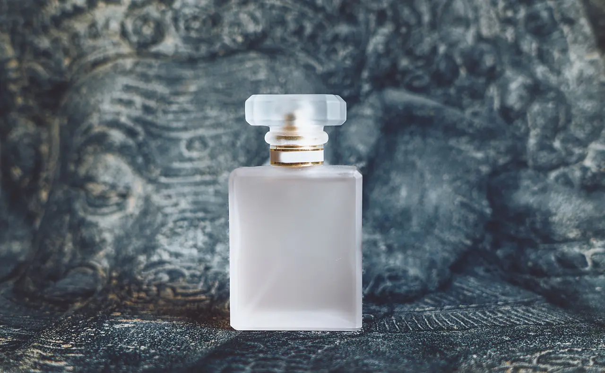
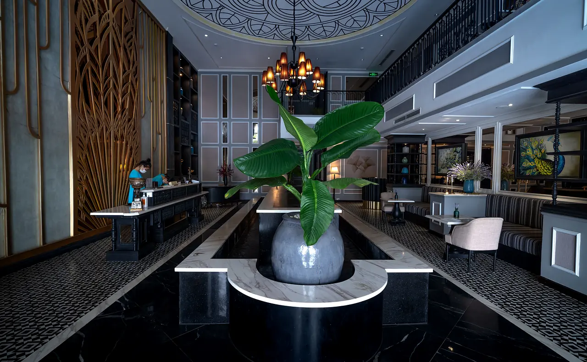
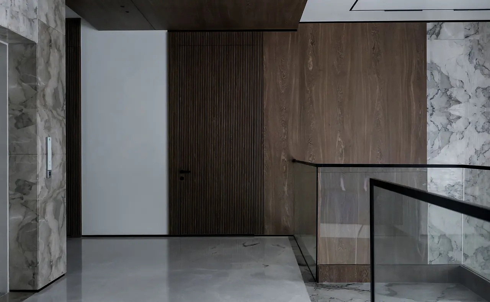

Website
Thiết kế website sang trọng cho thương hiệu cao cấp: điều gì tạo nên cảm giác luxury
Cảm giác sang trọng trên website không đến từ ánh vàng hay hiệu ứng dày đặc. Nó đến từ sự tiết chế: ít chữ hơn, ảnh tốt hơn, chuyển động chậm hơn và một lời mời gặp riêng thay cho nút mua hàng. Bài này đi qua từng yếu tố, kèm ví dụ theo ngành và các mẫu demo chạy thật của Dream Labs.

Thiết kế website sang trọng là làm cho khách cảm thấy thương hiệu đáng giá trước khi họ đọc giá. Cảm giác luxury đến từ tám yếu tố: khoảng trắng rộng, chữ có chủ đích, bảng màu tiết chế, ảnh và video chất lượng cao, chuyển động chậm và ít, giọng văn điềm đạm, trải nghiệm hỏi giá hoặc đặt hẹn riêng tư, và tốc độ tải nhanh. Thiếu một yếu tố, cả trang có thể "rẻ" đi ngay.
Bài thiết kế website cao cấp cho doanh nghiệp đã nói về tiêu chí chung và quy trình làm một website chuyên nghiệp. Bài này đi hẹp hơn: thẩm mỹ. Vì sao cùng một bộ nội dung, website này trông như thương hiệu xa xỉ còn website kia trông như cửa hàng giảm giá, và làm thế nào để thương hiệu Việt bán hàng giá trị cao có được cảm giác đó.
Website "sang trọng" khác website "đẹp" ở đâu
Website đẹp làm người xem thích. Website sang trọng làm người xem chậm lại. Thương hiệu bình dân cần nói nhiều, nhanh, rõ khuyến mãi để khách quyết định ngay. Thương hiệu cao cấp làm ngược lại: nói ít, để sản phẩm có không gian, và tin rằng khách sẽ tự tìm đến bước tiếp theo.
Khác biệt này thể hiện ở những chỗ rất nhỏ: một banner có ba dòng chữ thay vì mười, một nút "Hẹn xem riêng" thay vì "Mua ngay giảm 30%", một bức ảnh lớn duy nhất thay vì lưới mười hai ảnh. Cũng như bao bì cao cấp, cảm giác sang trọng trên website chủ yếu đến từ những gì bạn dám bỏ đi.
Tám yếu tố tạo cảm giác sang trọng trên website
1. Khoảng trắng: để sản phẩm được thở
Khoảng trắng (không nhất thiết màu trắng) là phần trống giữa các khối nội dung. Trên website cao cấp, khoảng trống giữa các phần thường rộng gấp đôi, gấp ba website thông thường, mỗi màn hình chỉ nói một ý. Khách cuộn nhiều hơn nhưng không thấy mệt, vì mỗi lần dừng lại chỉ có một thứ để nhìn. Đừng vội "lấp cho đủ" chỗ trống bằng một dòng ưu đãi hay một biểu tượng.
2. Typography: chữ là một nửa thương hiệu
Phần lớn website luxury dùng hai kiểu chữ: một kiểu có chân (serif) thanh mảnh hoặc một kiểu không chân rất tiết chế cho tiêu đề, và một kiểu dễ đọc cho nội dung. Tiêu đề lớn, ít chữ, khoảng cách dòng thoáng; chữ nhỏ như nhãn mục thường viết hoa, giãn chữ nhẹ. Với tiếng Việt, cần chọn phông hỗ trợ đầy đủ dấu và kiểm tra kỹ các chữ như "ỗ", "ữ", "ẫ" ở cỡ lớn, vì nhiều phông đẹp trên tiếng Anh nhưng dấu tiếng Việt bị chồng, lệch.
3. Bảng màu tiết chế
Hai đến ba màu là đủ: một màu nền (kem, đen than, xanh đêm), một màu chữ và một màu nhấn dùng rất ít. Vàng kim là lựa chọn quen thuộc nhưng dễ thành phô trương nếu dùng cho cả viền, nút và chữ; nhiều thương hiệu cao cấp chỉ dùng màu nhấn cho một đường kẻ mảnh hoặc một trạng thái khi rê chuột. Màu nên lấy từ chính sản phẩm và không gian: màu da thuộc, màu đá, màu gỗ của showroom.
4. Ảnh và video: chất lượng quan trọng hơn số lượng
Ảnh là yếu tố quyết định nhất và cũng khó "cứu" nhất bằng thiết kế. Website luxury cần ảnh chụp riêng, ánh sáng có chủ đích, cùng một tông màu xuyên suốt. Một bộ tám ảnh đồng nhất hơn ba mươi ảnh chụp nhiều đợt khác nhau. Video nên ngắn, không tiếng, lặp nhẹ nhàng, và phải có ảnh tĩnh thay thế để trang không trắng trong lúc tải.

5. Chuyển động tinh tế
Chuyển động trên website cao cấp giống cách một nhân viên salon đưa sản phẩm ra: chậm, có chủ đích, không gây giật mình. Ảnh hiện dần khi cuộn tới, chữ tiêu đề sáng lên từng dòng, chuyển trang mượt. Tránh hiệu ứng nảy, xoay, nhấp nháy và hiệu ứng chạy liên tục trong lúc khách đang đọc. Website cũng nên tôn trọng thiết lập giảm chuyển động trên thiết bị của người xem; trình duyệt cho phép nhận biết thiết lập này qua truy vấn prefers-reduced-motion (tài liệu MDN) để tắt bớt hiệu ứng không cần thiết.
6. Giọng văn điềm đạm
Câu chữ sang trọng ngắn, cụ thể và không phóng đại. "Kim cương có chứng thư độc lập, nạm tay trên bạch kim" thuyết phục hơn "trang sức đẳng cấp số 1, sang chảnh bậc nhất". Thay tính từ bằng sự thật: số giờ làm một sản phẩm, nguồn nguyên liệu, số lượng sản xuất mỗi năm. Hạn chế dấu chấm than, chữ viết hoa toàn bộ và biểu tượng cảm xúc.
7. Trải nghiệm hỏi giá, đặt hẹn riêng tư
Khách mua hàng giá trị cao hiếm khi bấm "thêm vào giỏ". Họ muốn được tư vấn riêng, xem tận tay, và không muốn bị gọi điện dồn dập. Website nên có: nút "Hẹn xem riêng" hoặc "Nhận báo giá" rõ ràng nhưng không chói; form ngắn hỏi đúng thứ cần để chuẩn bị (sản phẩm quan tâm, dịp, thời gian thuận tiện, cách liên hệ mong muốn); lời cam kết bảo mật thông tin; và lựa chọn kênh liên hệ kín đáo như Zalo, email hoặc gọi video. Với sản phẩm "giá theo yêu cầu", hãy nói rõ lý do (chế tác riêng, số lượng giới hạn) thay vì để trống.
8. Tốc độ: sang trọng không được chậm
Ảnh lớn và video dễ khiến website chậm, mà một trang trắng vài giây phá hỏng mọi công sức thẩm mỹ. Hãy dùng ảnh đúng cỡ cho từng màn hình, định dạng hiện đại như AVIF hoặc WebP, và tải ảnh phía dưới khi khách cuộn tới. Thước đo phổ biến là Core Web Vitals; theo web.dev, ngưỡng "tốt" là LCP từ 2,5 giây trở xuống, INP từ 200 mili giây trở xuống và CLS từ 0,1 trở xuống.
Bảng so sánh: website thông thường và website sang trọng
| Yếu tố | Website thông thường | Website sang trọng |
|---|---|---|
| Màn hình đầu | Slide nhiều ảnh, nhiều dòng khuyến mãi | Một ảnh hoặc video lớn, một câu ngắn |
| Chữ | Nhiều cỡ, nhiều màu, in đậm khắp nơi | Hai kiểu chữ, cỡ lớn cho tiêu đề, giãn dòng thoáng |
| Màu | Nhiều màu nổi để gây chú ý | 2–3 màu, màu nhấn dùng rất ít |
| Ảnh | Ảnh nhiều nguồn, không cùng tông | Bộ ảnh chụp riêng, đồng nhất ánh sáng |
| Chuyển động | Banner chạy, hiệu ứng nảy, cửa sổ bật lên | Hiện dần chậm, ít, có chủ đích |
| Giọng văn | "Rẻ nhất", "số 1", nhiều dấu chấm than | Ngắn, cụ thể, dùng dữ kiện thay tính từ |
| Hành động chính | Mua ngay, giỏ hàng, mã giảm giá | Hẹn xem riêng, nhận tư vấn, danh sách chờ |
| Thông tin giá | Giá gạch, phần trăm giảm | Giá rõ ràng hoặc "giá theo yêu cầu" kèm lý do |
Minh họa bằng các mẫu website concept của Dream Labs
Các thương hiệu dưới đây là concept do Dream Labs tự đặt tên, tự viết và tự thiết kế để thể hiện tay nghề, không phải khách hàng và không phải thương hiệu đang bán. Mỗi mẫu chạy thật, bấm thử được trên điện thoại và máy tính.
- Mẫu website trang sức Ysmarène: nền xanh đêm, ảnh nhẫn kim cương trên mặt nước, ba khung ảnh lớn giải thích giác cắt, cấp màu, độ tinh khiết. Khối "thử một viên của riêng bạn" cho khách kéo số carat và đổi cấp màu để thấy viên đá thay đổi, sau đó mời đặt hẹn riêng tại salon hoặc qua video. Đây là ví dụ cho yếu tố 7: biến câu hỏi khó nói thành công cụ tự tìm hiểu, rồi mới mời gặp.
- Mẫu website nước hoa Ombrève: nền tối ánh hổ phách, màn hình đầu đổi chai theo từng mùi hương, ba "chương ánh sáng" dùng chất liệu và ánh sáng để gợi tả mùi thay cho danh sách nốt hương. Một câu triết lý sáng dần từng chữ khi cuộn là ví dụ cho chuyển động tinh tế.
- Mẫu website đồng hồ Orvanthe: ngôn ngữ đơn sắc, chữ lớn, mặt số vẽ bằng mã chạy đúng giờ trên máy người xem, bảng thông số toàn màn hình. Sự sang trọng ở đây nằm ở độ chính xác và dữ kiện, đúng với yếu tố giọng văn "dữ kiện thay tính từ".
- Mẫu website túi xách Lavrène: trang đầu dàn như bìa tạp chí với tiêu đề chữ có chân trên nền kem, mục lục tám dáng túi đổi được sáu màu da, phụ bản ảnh lật trang và form hẹn riêng tại xưởng. Ví dụ cho typography và nhịp bố cục kiểu biên tập.
Xem toàn bộ trong Phòng mẫu website. Các mẫu cho thấy một điều: không có công thức "luxury" chung. Trang sức dùng ánh sáng và chiều sâu, đồng hồ dùng sự chính xác, đồ da dùng nhịp tạp chí. Thẩm mỹ phải xuất phát từ chính sản phẩm.
Áp dụng theo ngành tại Việt Nam
Các gợi ý dưới đây là ví dụ minh họa về hướng thẩm mỹ, cần điều chỉnh theo từng thương hiệu cụ thể.
- Trang sức, kim hoàn: nền tối hoặc kem để ánh kim nổi bật, ảnh macro sắc nét, giải thích chứng thư và chất liệu, hẹn xem tại salon.
- Nước hoa, mỹ phẩm cao cấp: bán bằng không khí và chất liệu, thông tin tầng hương, thành phần rõ ràng, mời thử tại cửa hàng. Xem thêm trang thiết kế website mỹ phẩm.
- Khách sạn, resort: ảnh không gian rộng, video ngắn về ánh sáng trong ngày, hạng phòng trình bày như tạp chí du lịch, đặt phòng trực tiếp gọn gàng và song ngữ. Xem trang thiết kế website khách sạn.
- Bất động sản hạng sang: ít số liệu bán hàng dồn dập, nhiều ảnh phối cảnh và vật liệu, form nhận bảng giá kín đáo, lịch hẹn tham quan nhà mẫu. Xem trang thiết kế website bất động sản.
- Xe sang, showroom ô tô: ảnh lớn theo góc máy chuẩn, cấu hình xe có giá cập nhật, đặt lịch lái thử riêng. Trang thiết kế website xe sang có các demo concept dành riêng cho ngành.
- Spa, thẩm mỹ cao cấp: tông màu dịu, ảnh không gian và chất liệu, liệu trình trình bày như thực đơn, đặt lịch riêng tư không cần đăng ký tài khoản. Xem trang thiết kế website spa.

Checklist kiểm tra cảm giác sang trọng
Mở trang chủ website hiện tại trên điện thoại và tự trả lời từng câu. Mỗi câu "không" là một việc nên sửa.
- Màn hình đầu chỉ có một thông điệp chính và một hành động chính?
- Toàn website dùng không quá hai kiểu chữ, dấu tiếng Việt hiển thị chuẩn ở cỡ lớn?
- Bảng màu gói gọn trong 2–3 màu, màu nhấn dùng có tiết chế?
- Mọi ảnh cùng tông màu, đủ sắc nét trên màn hình lớn, không có ảnh mạng không rõ nguồn?
- Không có cửa sổ bật lên ngay khi vào trang, không có banner chạy liên tục?
- Câu chữ không có "số 1", "rẻ nhất", không lạm dụng dấu chấm than?
- Có nút đặt hẹn hoặc nhận tư vấn riêng, form ngắn, nói rõ thông tin được bảo mật?
- Trang chủ đạt ngưỡng Core Web Vitals "tốt" trên điện thoại khi kiểm tra bằng PageSpeed Insights?
- Giao diện điện thoại giữ được khoảng trắng, không bị dồn chữ, nút đủ lớn để bấm?
Sai lầm thường gặp khi làm website "sang trọng"
- Đồng nhất sang trọng với màu vàng kim và hoa văn. Dùng khắp nơi, hiệu ứng thường ngược lại.
- Dùng ảnh mẫu trên mạng cho sản phẩm cao cấp. Khách mua hàng giá trị cao rất nhạy với ảnh không thật.
- Hiệu ứng nặng làm website chậm, đặc biệt video nền dung lượng lớn không có ảnh thay thế.
- Chọn phông chữ đẹp nhưng lỗi dấu tiếng Việt. Một chữ "ộ" lệch dấu ở tiêu đề đủ làm mất cảm giác chỉn chu.
- Đẩy khách vào giỏ hàng và mã giảm giá trong khi sản phẩm cần tư vấn, xem tận tay.
- Thiết kế chỉ trên màn hình máy tính lớn. Phần lớn khách xem lần đầu trên điện thoại; khoảng trắng và ảnh lớn phải được thiết kế lại cho màn hình nhỏ chứ không chỉ thu nhỏ.
- Bỏ quên nội dung tiếng Anh khi khách là người nước ngoài hoặc Việt kiều. Xem bài website đa ngôn ngữ.

Thiết kế website sang trọng tại Dream Labs
Website sang trọng thường cần thiết kế riêng thay vì dựng từ mẫu có sẵn, vì thẩm mỹ phải đi từ chính sản phẩm. Gói Chuyên nghiệp 18.000.000đ phù hợp thương hiệu cần website đến 10 trang, thiết kế riêng 100%, chuyển cảnh mượt, trang quản trị nội dung và tốc độ Lighthouse từ 90 trở lên. Gói Cao cấp Liên hệ dành cho thương hiệu cần trải nghiệm sâu hơn: không giới hạn trang, đa ngôn ngữ, 3D/WebGL, đặt hẹn gắn CRM, trợ lý AI tiếp khách và bảo trì 12 tháng. Gói Cơ bản 8.000.000đ theo mẫu tinh chỉnh, hợp với cửa hàng muốn bắt đầu gọn.
| Gói | Giá | Thời gian | Bao gồm |
|---|---|---|---|
| Cơ bản | 8.000.000đ | 7–10 ngày4 vòng sửa | Có mặt chuyên nghiệp trên Google và điện thoại trong khoảng 10 ngày, khách tìm thấy và liên hệ được ngay.
|
| Chuyên nghiệpPhổ biến nhất | 18.000.000đ | 14–21 ngày9 vòng sửa | Website riêng đúng tầm thương hiệu, tự đăng bài để có khách từ Google lâu dài, không phụ thuộc người làm.
|
| Cao cấp | Liên hệ | 30–45 ngàyKhông giới hạn trong phạm vi | Trải nghiệm đủ khác biệt để định vị cao cấp, bán hàng và tiếp khách trực tuyến, phục vụ cả khách nước ngoài.
|
Xem chi tiết tại bảng giá và trang thiết kế website. Trước khi làm, bạn có thể đọc bài báo giá thiết kế website để hiểu các yếu tố ảnh hưởng chi phí. Gửi ảnh sản phẩm và câu chuyện thương hiệu qua Zalo 0934 246 420, Dream Labs đề xuất hướng thẩm mỹ phù hợp.
Câu hỏi thường gặp
Thiết kế website sang trọng cần những yếu tố nào?
Khoảng trắng rộng, typography có chủ đích, bảng màu tiết chế, ảnh và video chất lượng cao, chuyển động chậm và ít, giọng văn điềm đạm, trải nghiệm đặt hẹn hoặc hỏi giá riêng tư, và tốc độ tải nhanh. Các yếu tố này phải nhất quán trên mọi trang.
Website luxury có nên dùng nền đen và chữ vàng?
Có thể, nhưng không bắt buộc. Nhiều website cao cấp dùng nền kem, trắng ngà hoặc xanh đêm. Quan trọng là bảng màu ít, lấy từ chính sản phẩm và màu nhấn được dùng tiết chế.
Chưa có ảnh chụp chuyên nghiệp thì có làm website sang trọng được không?
Khó đạt cảm giác sang trọng thật sự nếu chỉ có ảnh chụp điện thoại hoặc ảnh mẫu. Nên đầu tư một buổi chụp sản phẩm và không gian với cùng một hướng ánh sáng; trong lúc chờ, thiết kế có thể dùng bố cục chữ và ít ảnh hơn.
Hiệu ứng chuyển động có làm website chậm không?
Hiệu ứng nhẹ viết bằng CSS hoặc JavaScript gọn thường không đáng kể. Video nền dung lượng lớn, thư viện hiệu ứng nặng và 3D không tối ưu mới là nguyên nhân chính. Nên kiểm tra Core Web Vitals trên điện thoại sau khi thêm hiệu ứng.
Website sang trọng có cần hiện giá sản phẩm không?
Tùy sản phẩm. Sản phẩm có giá cố định nên hiện giá rõ để tạo sự minh bạch. Sản phẩm chế tác riêng hoặc số lượng giới hạn có thể ghi "giá theo yêu cầu" kèm lý do và một nút hẹn tư vấn.
Các mẫu Ysmarène, Ombrève, Orvanthe, Lavrène có phải khách hàng thật không?
Không. Đây là các thương hiệu concept do Dream Labs tự nghĩ và thiết kế để minh họa tay nghề. Website của bạn sẽ được thiết kế riêng theo sản phẩm và câu chuyện thương hiệu của bạn.
Nguồn ảnh: ảnh bìa: The Glorious Studio / Pexels · ảnh 1: Ahimsa - OM / Pexels · ảnh 2: Quang Nguyen Vinh / Pexels · ảnh 3: Essentia Media / Pexels. Ảnh dùng theo giấy phép miễn phí của Pexels, chỉ mang tính minh họa.
Bắt đầu cùng Dream Labs
Muốn website khiến khách cảm được đẳng cấp thương hiệu ngay màn hình đầu?
Xem các mẫu website concept chạy thật trong Phòng mẫu, rồi nhắn Dream Labs về thương hiệu, sản phẩm và cách bạn đón khách. Chúng tôi đề xuất hướng thẩm mỹ phù hợp.